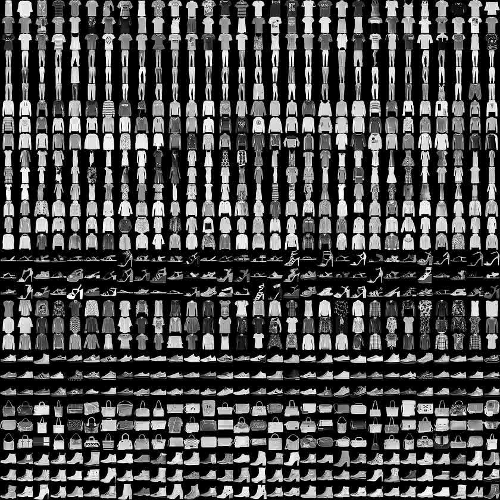
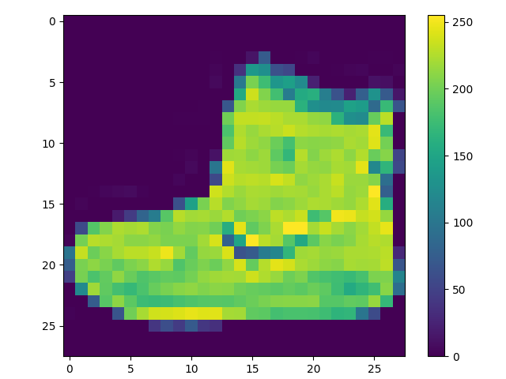

2.1 基础图片分类
对运动鞋和衬衫等服装图像进行分类！
创建日期: 2022-07-20
本教程训练神经网络模型，对运动鞋和衬衫等服装图像进行分类。这是一个完整的 TensorFlow 程序的快速概述，并在我们学习的过程中解释细节。代码在 fashion_classify.py 文件里。
2.1.1 Fashion 数据集
本教程使用 Fashion MNIST 数据集，其中包含 10 个类别，共 70000 张灰度图像。这些图像以低分辨率（28x28 像素）显示单件服装，如下所示：
Fashion MNIST 旨在替代经典的 MNIST 数据集（通常比喻成机器学习领域的"Hello, World"），它在 第 1.1 节 新手速览 中已经使用。MNIST 数据集包含手写数字（0、1、2等）的图像，其格式与我们在此处使用的服装图片相同。
使用 Fashion MNIST 以增加多样性，并且比常规的 MNIST 问题稍微更具挑战性。这两个数据集都相对较小，用于验证算法是否按预期工作，它们是测试和调试代码的良好起点。
选取 60000 张图像用于训练网络，10000 张图像用于评估神经网络进行图像分类的准确性。直接从 Keras 中导入数据集：
(train_images, train_labels), (test_images, test_labels) = keras.datasets.fashion_mnist.load_data()加载数据集返回四个 NumPy 数组：
-
train_images和train_labels是训练集 -- 模型用于学习的数据； -
test_images和test_labels是测试集 -- 模型用于测试的数据。
图像是 28x28 的 NumPy 数组，像素值在 [0, 255] 的区间。标签是整形数组，从 0 到 9 ，对应图像所代表的服装类别：
| 标签 | 类别 |
|---|---|
| 0 | T-shirt/top |
| 1 | Trouser |
| 2 | Pullover |
| 3 | Dress |
| 4 | Coat |
| 5 | Sandal |
| 6 | Shirt |
| 7 | Sneaker |
| 8 | Bag |
| 9 | Ankle boot |
每张图像都对应一个标签，因为类别名称没有包含在数据集中，因此将它们存储在 class_names 变量中，以便稍后绘制图像的时候使用：
class_names = ['T-shirt/top', 'Trouser', 'Pullover', 'Dress', 'Coat',
'Sandal', 'Shirt', 'Sneaker', 'Bag', 'Ankle boot']2.1.2 探索数据
在训练模型之前，我们先来了解以下数据集的格式。下图显示训练集中有 60000 张图像，每张图像的大小为 28x28 像素：
print(train_images.shape)(60000, 28, 28)
同样，训练有 60000 个标签：
print(len(train_labels))60000
每个标签都是 0 - 9 之间的整数（打印前 10 个标签）：
print(train_labels[:10])[9 0 0 3 0 2 7 2 5 5]
测试集有 10000 张图像，每张图像时 28x28 像素，包含 10000 个图像标签：
print(test_images.shape)
print(len(test_labels))(10000, 28, 28) 10000
2.1.3 数据预处理
在训练网络之前，必须对数据进行预处理。如果我们检查训练集中的第一个图像，会看到像素值在 0 - 255 的范围内：
在将这些值输入到神经网络模型之前，先将它们缩放到 0 - 1 的范围。为此，将这些值除以 255 ，重要的是，训练集和测试集必须以相同的方式进行预处理：
train_images = train_images / 255.0
test_images = test_images / 255.0为了验证数据格式是否正确，让我们显示训练集中前 25 张图像并在每个图像下方显示类别名称：
for i in range(25):
pyplot.subplot(5, 5, i+1)
pyplot.xticks([])
pyplot.yticks([])
pyplot.grid(False)
pyplot.imshow(train_images[i], cmap=pyplot.cm.binary)
pyplot.xlabel(class_names[train_labels[i]])
pyplot.subplots_adjust(wspace=0.5, hspace=0.5,
left=0.04, right=0.96, top=0.96, bottom=0.06)
pyplot.show()2.1.4 构建模型
构建神经网络需要配置模型的各个层，然后编译模型。
2.1.4.1 设置图层
神经网络的基本构建块是层，层从输入的数据中提取 表示 (Representation) ，这些表示对于解决当前的问题有意义。
大部分深度学习都是将一些简单的层串联起来，大多数层 (例如 keras.layers.Dense) 都具有可学习的参数。
model = keras.Sequential([
keras.layers.Flatten(input_shape=(28, 28)),
keras.layers.Dense(128, activation='relu'),
keras.layers.Dense(10)
])该网络的第一层是 keras.layers.Flatten ，将图像的格式从二维数组（28x28 图像）转换为一维数组（28x28 = 784 像素）。可以将此层视为将图像中的像素拆分并进行重新排列。此层没有要学习的参数，它只会格式化数据。
像素被压平后，网络由两个 keras.layers.Dense 层组成，这些是密集连接或者完全连接的神经层。第一个 Dense 层有 128 个节点（或神经元）第二个 Dense 层（也是最后一个）返回一个长度为 10 的 Logits 数组，每个节点包含一个分数，指示当前图像属于 10 个类别之一。
2.1.4.2 编译模型
在模型准备好进行训练之前，还需要进行一些设置。这些是在模型的编译步骤中添加的：
-
优化器 -- 这是模型根据看到的数据和损失函数进行更新的方式。
-
损失函数 -- 这衡量了模型在训练过程中的准确度，我们需要最小化该函数以引导模型朝正确的方向发展。
-
指标 -- 用于监控训练和测试步骤，以下示例使用准确度，即正确分类的图像比例。
model.compile(optimizer='adam',
loss=keras.losses.SparseCategoricalCrossentropy(from_logits=True),
metrics=['accuracy'])2.1.5 训练模型
训练神经网络模型需要以下步骤：
-
将训练数据输入到模型，在此示例中，训练数据是
train_images和train_labels数组。 -
该模型学习图像和关联的标签。
-
要求模型对测试集（
test_images数组）进行预测。 -
验证预测是否与
test_labels数组中的标签匹配。
2.1.5.1 提供信息
要开始训练，调用 Model.fit 方法 - 之所以这样称呼，是因为它可以将模型拟合到训练数据：
model.fit(train_images, train_labels, epochs=10)随着模型的训练，会显示损失和准确率指标，该模型在训练数据集上的准确率达到约 0.91 ：
Epoch 1/10 1875/1875 ━━━━━━━━━━━━━━━━━━━━ 3s 876us/step - accuracy: 0.7827 - loss: 0.6255 Epoch 2/10 1875/1875 ━━━━━━━━━━━━━━━━━━━━ 2s 934us/step - accuracy: 0.8603 - loss: 0.3885 Epoch 3/10 1875/1875 ━━━━━━━━━━━━━━━━━━━━ 2s 1ms/step - accuracy: 0.8763 - loss: 0.3426 Epoch 4/10 1875/1875 ━━━━━━━━━━━━━━━━━━━━ 2s 903us/step - accuracy: 0.8858 - loss: 0.3111 Epoch 5/10 1875/1875 ━━━━━━━━━━━━━━━━━━━━ 2s 1ms/step - accuracy: 0.8941 - loss: 0.2873 Epoch 6/10 1875/1875 ━━━━━━━━━━━━━━━━━━━━ 2s 913us/step - accuracy: 0.8961 - loss: 0.2799 Epoch 7/10 1875/1875 ━━━━━━━━━━━━━━━━━━━━ 2s 867us/step - accuracy: 0.8988 - loss: 0.2671 Epoch 8/10 1875/1875 ━━━━━━━━━━━━━━━━━━━━ 2s 902us/step - accuracy: 0.9043 - loss: 0.2565 Epoch 9/10 1875/1875 ━━━━━━━━━━━━━━━━━━━━ 2s 925us/step - accuracy: 0.9088 - loss: 0.2426 Epoch 10/10 1875/1875 ━━━━━━━━━━━━━━━━━━━━ 2s 893us/step - accuracy: 0.9102 - loss: 0.2407
2.1.5.2 评估准确度
接下来，比较模型在测试集上的表现：
test_loss, test_acc = model.evaluate(test_images, test_labels, verbose=2)
print('Test accuracy:', test_acc)313/313 - 0s - 928us/step - accuracy: 0.8857 - loss: 0.3391 Test accuracy: 0.885699987411499
事实证明，测试数据集上的准确率略低于训练数据集上的准确率。训练准确率和测试准确率之间的差距代表了过度拟合 (Overfitting) 。当机器学习模型在新的、以前未见过的输入上的表现比在训练数据上的表现更差时，就会发生过拟合。过拟合的模型会记住训练数据集中的噪声和细节，以至于对模型在新数据上的性能产生负面影响。
2.1.5.3 做出预测
训练完模型后，可以使用它来预测某些图像。附加一个 softmax 层，将模型的线性输出 (Logits) 转换未概率，这更容易解释：
probability_model = keras.Sequential([model,
keras.layers.Softmax()])预测测试集中前 5 张图片：
predictions = probability_model.predict(test_images[:5])
print(numpy.argmax(predictions, axis=-1))
print(test_labels[:5])预测是一个由 10 个数字组成的数组，它们表示模型对图像与 10 种不同服装相对应的置信度，这里选择最高的置信度，当作预测的类别：
[9 2 1 1 6] [9 2 1 1 6]
2.1.6 使用模型
最后，使用训练好的模型对单幅图像进行预测。
# Grab an image from the test dataset.
img = test_images[1]
print(img.shape)(28, 28)
模型经过优化，可以一次性对一批数据进行预测。因此，即使使用单张图像，也需要将其添加到列表中：
# Add the image to a batch where it's the only member.
img = numpy.expand_dims(img, axis=0)
print(img.shape)(1, 28, 28)
现在预测该图像正确的标签：
pred = probability_model.predict(img)
print(numpy.round(pred, 3))[[0. 0. 0.999 0. 0. 0. 0. 0. 0. 0. ]]
keras.Model.predict返回一个二维矩阵 - 数据批次中每张图片对应一个列表。获取批次中（唯一）图片的预测：
print(numpy.argmax(pred[0]))2
该模型如预期的那样预测了正确的标签。